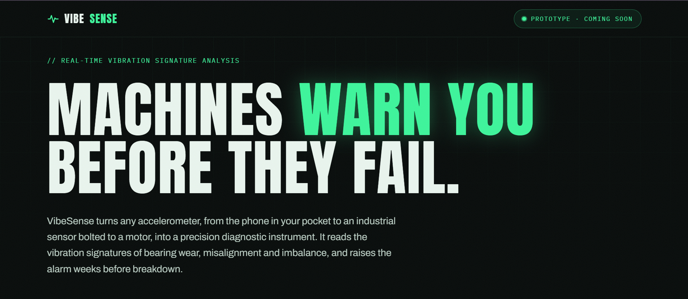

IoT · Predictive Maintenance
VibeSense
Machines whisper before they scream. VibeSense catches the whisper — turning any smartphone or sensor into an early-warning system for equipment failure.

// The Problem Breakdowns Never Send a Calendar Invite
It's 3 AM on a Sunday. An industrial motor gives up without warning. Production grinds to a halt, emergency crews rush in, overtime costs spike, and promises to customers quietly break. By the time anyone notices something was wrong, it's already too late.
That's reactive maintenance — and it's still how most equipment gets managed. Here's the part most people miss: machines rarely fail out of nowhere. Bearing wear, misalignment, looseness, imbalance — every one of them leaves fingerprints in a machine's vibration days or weeks before a breakdown. Most operations simply have no way to hear them.
VibeSense exists to close that gap. It listens to the subtle language of machines and translates it into intelligence you can act on — before failure happens.
// The Payoff What VibeSense Does For You
Your Phone Becomes the Sensor
Any smartphone or IoT device with motion sensing becomes a precision diagnostic tool. No proprietary hardware to buy before you can start listening.
A Live Window Into Machine Health
One command-center dashboard: live readings, a frequency view of what's shaking, and trend lines — all in the same glance.
Alerts With Evidence
No mystery warnings. Every alert tells you what was observed, what normal looks like, and why it crossed the line.
Learns What Normal Is
VibeSense studies each machine's healthy rhythm first, then only speaks up when something genuinely drifts from it.
Spots Trouble While It's Still Small
Machines in decline leave traces in the data. Teaching VibeSense to read those traces and forecast trouble days or weeks ahead is the next milestone — so repairs stay cheap and calm.
Prevention Over Panic
The whole point: swap 3 AM emergencies for planned, scheduled maintenance you chose on your own terms.
// How It Works From Shakes to Foresight in Four Steps
Attach
Place any phone or vibration sensor on or near the machine you care about.
Stream
The device sends its motion readings straight to your dashboard, live as they happen.
Understand
VibeSense translates raw shakes into a clear health picture and compares it against what normal looks like for that machine.
Act Early
When something drifts, you get an alert with the evidence — so maintenance happens on your schedule, not the machine's.
// Who It's For Built for the People Who Keep Things Running
Stop Repairing. Start Listening.
VibeSense is under active development. Explore the project, try it with the phone already in your pocket, or reach out about bringing predictive maintenance to your floor.